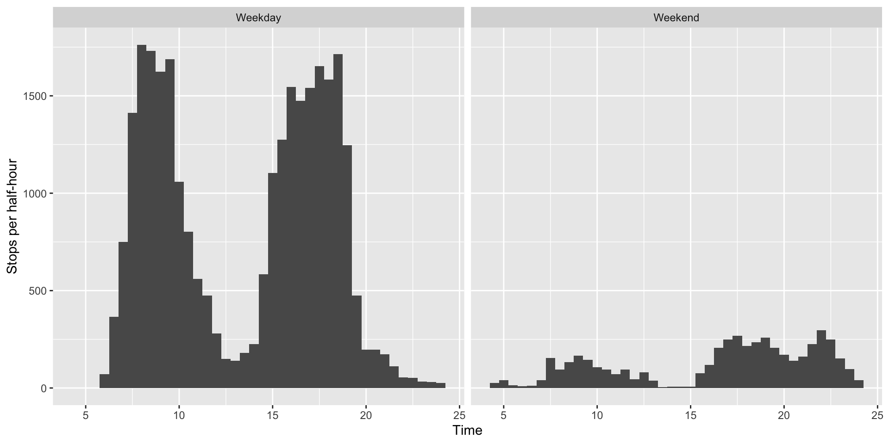

As I said last time, there have been quite a lot of bus cancellations in Auckland recently. Auckland Transport have decided to (temporarily) give up on some of the more-frequently cancelled trips, so that people can plan their travel more sensibly1, which is actually a good idea.
So, which buses are we losing? The static GTFS data at AT currently describes the new timetable and the current timetable.
cal<-read.csv("~/Downloads/gtfs (2)/calendar.txt")
routes<-read.csv("~/Downloads/gtfs (2)/routes.txt")
trips<-read.csv("~/Downloads/gtfs (2)/trips.txt")
stoptimes<-read.csv("~/Downloads/gtfs (2)/stop_times.txt")The calendar file lists which services run, by day of the week. The trips file tells you the trip_id for each service. The routes file tells you the route name for each trip, and the stoptimes file tells you arrival times for each stop on each trip.
Start off by loading a bit of tidyverse
library(dplyr)
library(stringr)
library(ggplot2)One feature of the GTFS standard is the exciting range of unique identifiers. This is enhanced by the Auckland Transport habit of putting the revision date into the various identifiers to make them more unique – we’re taking advantage of that here, to separate the current and future timetables. The short_trip_id is the trip_id minus the revision tag.
buses<- stoptimes |>
inner_join(trips, by="trip_id") |>
inner_join(routes, by="route_id") |>
inner_join(cal, by="service_id") |>
mutate(short_trip_id= str_extract(trip_id, "[^-]+"))Separate out new and old timetables.
oldtrips<-filter(buses, start_date=="20221026")
newtrips<-filter(buses, start_date=="20221106") |>
distinct(short_trip_id)We have to worry, in principle, that some trips could just have new trip ids – there’s no natural law requiring them to stay constant. Fortunately, the number of trips per weekday that disappear is 1152, which is close to the roughly 1000 we were promised, and the number of new trip ids is much smaller. So I’ll go with looking at short_trip_ids that have been removed.
Now, do the differencing and set up a time variable. Annoyingly, neither base R nor lubridate has a simple time-of-day variable (perhaps because it’s not actually as simple as it looks). I’ll discard a few rows where this time variable breaks because of times after midnight; these are nearly all trains rather than buses.
I’m also going to pretend for visualisation purposes that all weekdays are the same (which is approximately true in Auckland, but could be far from true in other GTFS datasets)
gone_buses<-oldtrips |>
anti_join(newtrips, by="short_trip_id") |>
mutate(stop_time=as.POSIXct(strptime(arrival_time,format="%H:%M:%S"))-
as.POSIXct(strptime("00:00:00",format="%H:%M:%S"))) |>
filter(!is.na(stop_time)) |>
mutate(daytype = ifelse(monday==1,"Weekday","Weekend"))Some pictures: stop visits to be removed, in half-hour bins, by weekday vs weekend
print(ggplot(gone_buses)+geom_histogram(aes(x=stop_time),binwidth=0.5)+
facet_wrap("daytype")+
xlab("Time")+
ylab("Stops per half-hour"))## Don't know how to automatically pick scale for object of type difftime. Defaulting to continuous.
and trips to be removed
gone_buses |>
group_by(daytype) |>
distinct(short_trip_id, .keep_all=TRUE) |>
ggplot()+geom_histogram(aes(x=stop_time),binwidth=0.5)+
facet_wrap("daytype")+xlab("Time")+
ylab("Trips per half-hour")## Don't know how to automatically pick scale for object of type difftime. Defaulting to continuous.As you’d expect, the big cuts are in the morning and evening peaks, when the system gets really short of drivers.
The next question is where in Auckland the trips will be lost. I’ll use the first digit of the route number as a rough indication, with the small number of named routes handled separately
gone_routes<-gone_buses |>
distinct(short_trip_id, .keep_all=TRUE)
gone_routes_named<-filter(gone_routes,
route_short_name %in% c("NX1","OUT","INN","CTY","TMK"))
gone_routes_numbered<-mutate(gone_routes, group=substr(route_short_name,1,1)) |>
filter(group<"9")
gone_routes_named |>
group_by(route_short_name) |>
summarise(n()) ## # A tibble: 5 × 2
## route_short_name `n()`
## <chr> <int>
## 1 CTY 50
## 2 INN 26
## 3 NX1 53
## 4 OUT 12
## 5 TMK 6gone_routes_numbered |>
group_by(group) |>
summarise(n()) ## # A tibble: 7 × 2
## group `n()`
## <chr> <int>
## 1 1 204
## 2 2 292
## 3 3 49
## 4 5 56
## 5 6 102
## 6 7 46
## 7 8 46One obvious place to look is routes beginning with 3, which are in south Auckland. They’re actually doing ok. The worst seem to be 2, which run down through the central isthmus, and 1 which go west, though the losses on the NX1 over the Harbour Bridge could hurt.
and not at all so that the cancellation figures look better↩︎